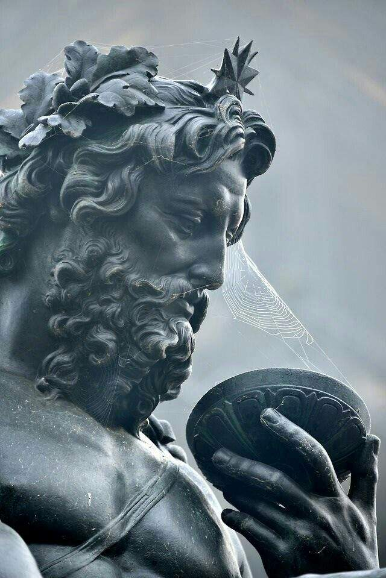
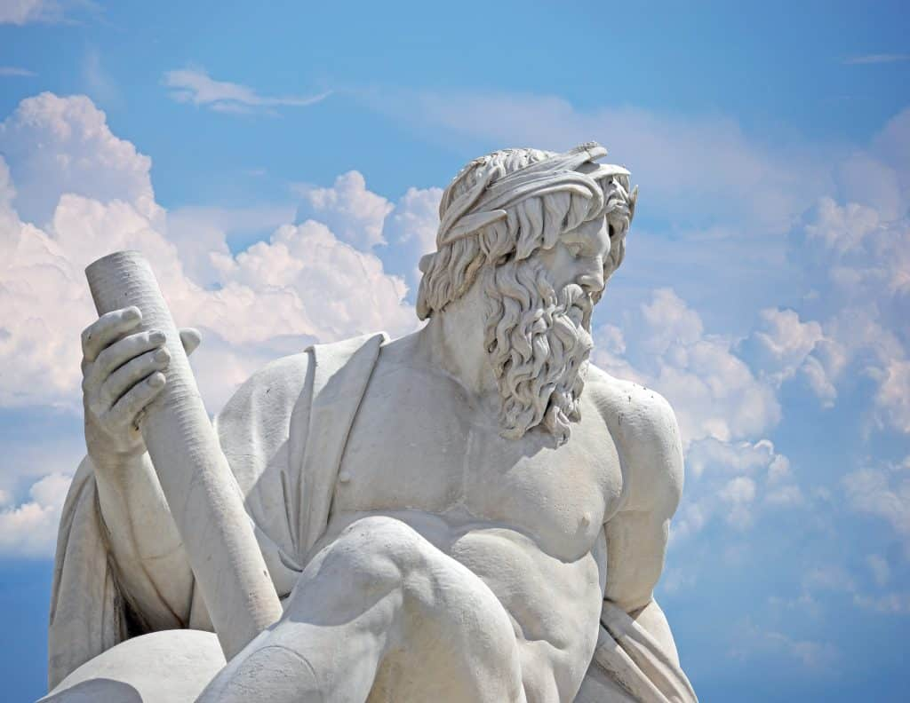

Zeus, senhor dos deuses e dos homens, surgiu na Grécia Antiga numa época em que proliferaram vários deuses nos mitos tribais, como tentativa de explicar os fenômenos naturais ou como garantia de vitória nas guerras, de boa colheita, de sorte no amor etc. Zeus é filho de Cromos (o mais forte dos titãs) e de Rea, sua irmã.
Diz a lenda que do casamento de Gaia (mãe terra) e Urano (céu) nasceram os titãs, ciclopes e gigantes, que personificavam as coisas grandes e poderosas da terra: montanhas, terremotos, furações etc. Cromos (o mais forte dos titãs), casou-se com sua irmã Rea e tiveram seis filhos. Zeus, Poseidon, Plutão, Hera, Héstia e Deméter.
 
Temendo a rivalidade entre os filhos, Cromos os “devorou” logo ao nascer, exceto Zeus, que Rea escondeu numa caverna no bosque de Creta, e colocou uma pedra em seu lugar para ser devorada. Entre outras lendas, Zeus teria sido criado por Melissa, que o alimentou com leite de cabra e mel. Quando se tornou adulto, Zeus derrotou o pai e obrigou-o a ressuscitar seus irmãos. Libertou também os ciclopes da tirania de Cromos, e eles em recompensa deram-lhe as armas do trovão e do relâmpago.
Zeus tornou-se senhor dos homens e supremo mandatário dos deuses que habitavam o monte Olimpo. Tinha o poder dos fenômenos atmosféricos e com sua mão direita mandava chuva para as plantações. Zeus tinha os seus súditos olímpicos e os mais famosos eram seus filhos, Febo, (deus do sol), Artêmis (deusa da lua e da caça), Hermes (alado mensageiro dos deuses), Ares (deus da guerra), Dionísio (deus do vinho e dos bacanais), Afrodite (deusa da beleza e do amor) e Palas Atena (deusa da sabedoria).